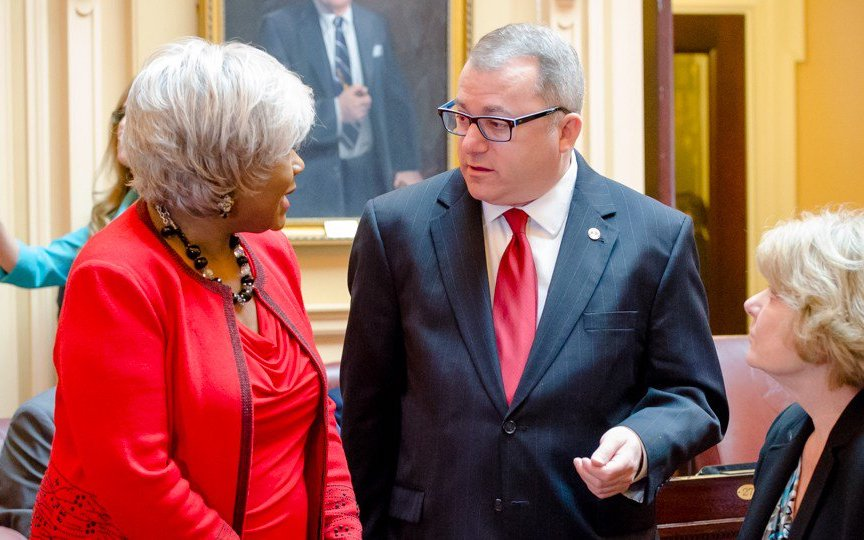

Virginia Senator Adam P. Ebbin took office in 2012 after serving for eight years in the House of Delegates.
As a leader in the General Assembly, Adam has fought to advance progressive priorities, including preventing
gun violence, making it easier to vote, and fighting for equality for all Virginians.
Adam represents the 30th Senate District, consisting of approximately 200,000 residents who reside in portions
of Arlington, Alexandria, and parts of Fairfax County’s Mount Vernon and Lee Districts. The district borders the
Potomac River and includes Reagan National Airport, Old Town Alexandria and George Washington’s Mount Vernon Estate.
During his tenure, Adam has distinguished himself as a voice for the easily exploited. He has won approval of
legislation to enable lower interest rates on deferred property taxes for seniors (HB 2635, 2005); to create a
Public Defender office in Arlington County (HB 1500, 2004); to provide support to victims of human trafficking
(SB 259, 2012 and HB 2190, 2011); and to provide prenatal care for immigrant mothers (SB 568, 2012). He also led
a bipartisan effort that provided access to life insurance benefits to domestic partners (HB 865, 2008 and HB 352, 2010),
and to protect the Latino community from legal fraud (SB 503, 2014) as well as formerly serving as Chair of the
Virginia Commission on the Prevention of Human Trafficking.
In the General Assembly, Senator Ebbin has worked to form diverse coalitions to advance pragmatic solutions.
These efforts include repealing the tax on hybrid cars (SB 1, 2014), ending the practice of suspending driver’s licenses
for nonpayment of court costs and fees (SB 10; 2020), and prohibiting public and private school personnel from recommending
a current or former staff member suspected of sexual misconduct to another employer (SB 605, 2018; SB 832, 2020)
During the 2020 legislative session, Adam passed a comprehensive ban on discrimination in employment, housing, and
public accommodations on the basis of sexual orientation or gender identity (SB 868; 2020), making Virginia the first
Southern State to create protections for the LGBT community. After years of work, he also passed legislation to decriminalize
marijuana (SB 2; 2020) and to allow employees to sue employers for stealing their earned wages (SB 838; 2020).

Adam has worked inside and outside the legislative process to ensure progressive change in Virginia. He founded the Virginia
Partisans Gay and Lesbian Democratic Club, ran campaigns to elect the first openly gay members of the Arlington County Board,
and the Alexandria City Council. In 2019 Adam raised and contributed over $250,000 to Democratic candidates in state races,
helping to win Virginia’s first progressive trifecta in its 400-year legislative history.
In the General Assembly, Adam serves on five Senate Committees: Finance and Appropriations; Commerce and Labor; Privileges
and Elections; General Laws and Technology; as well as the Transportation Committee.
He is a member of the Northern Virginia Transportation Commission, the School Readiness Committee, Joint Subcommittee on
Health and Human Resources Oversight, the Commission on Economic Opportunity for Virginians in Aspiring and Diverse Communities,
the Task force to Commemorate the Centennial Anniversary of Women's Right to Vote, and the Joint Commission on Technology and
Science. He is also the Co-Chair of the General Assembly Gun Violence Prevention Caucus and a steering committee member of
American State Legislators for Gun Violence Prevention. In 2020, Adam was appointed to the steering committee of Joe Biden's
LGBT election taskforce, Out for Biden.
Senator Ebbin has been honored by many organizations for his service including being recognized by the Virginia Education
Association as Solid as a Rock for Education, an Environmental Hero by the League of Conservation Voters, and named one of
Equality Virginia’s OUTstanding Virginians.
He has received Neighborhood Health’s Health Equity Award, the National Organization for the Reform of Marijuana Law’s
(NORML) Vanguard Award, has been recognized by the Virginia Humane Society as an All Star for Animals, and as the Legislator
of the Year by the Metropolitan Washington Building Trades Council.
His leadership skills were previously recognized by Governor Mark Warner, who in 2002 appointed Adam to serve as his Chief
Deputy Commissioner of the Department of Labor and Industry.
A native of Commack, New York, Adam has resided in Alexandria since 1989 and is a 1985 graduate of American University in
Washington, DC. He was a Fellow with the Flemming Foundation for Legislative Leadership in 2006 and at the University of
Virginia’s Sorensen Institute of Political Leadership in 2000. In 2012, Adam was also a Fellow at Harvard University’s Kennedy
School program for Senior Executives in State and Local Government.